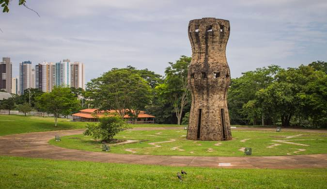

Mato Grosso do Sul é um estado localizado na Região Centro-Oeste do Brasil, conhecido por suas belezas naturais, como o Pantanal, um dos maiores ecossistemas úmidos do mundo. O estado se destaca na agropecuária, com grande produção de carne e grãos. Sua capital, Campo Grande, é um importante centro comercial e de serviços da região. Mato Grosso do Sul também é famoso pelo turismo ecológico, oferecendo diversas opções de lazer e atividades ao ar livre.
 Voltar